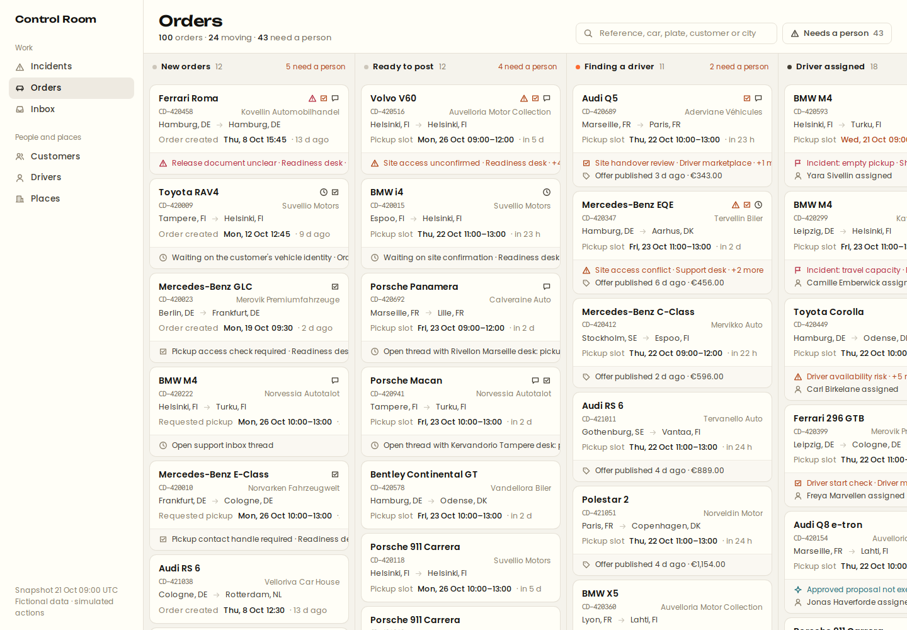
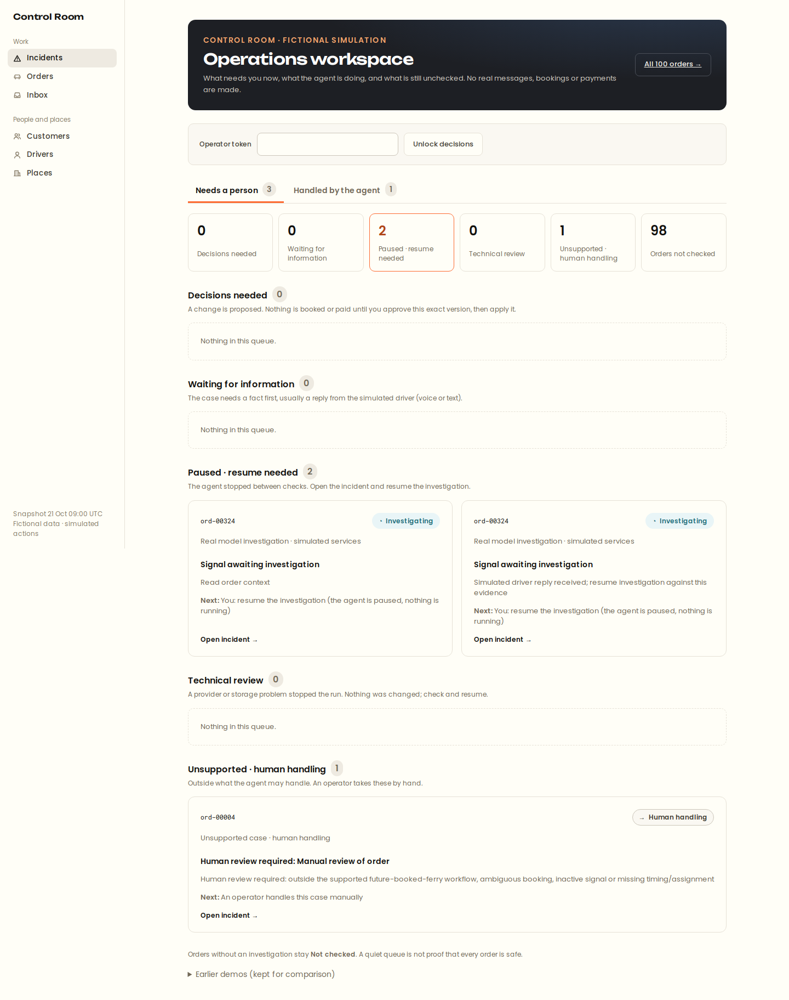
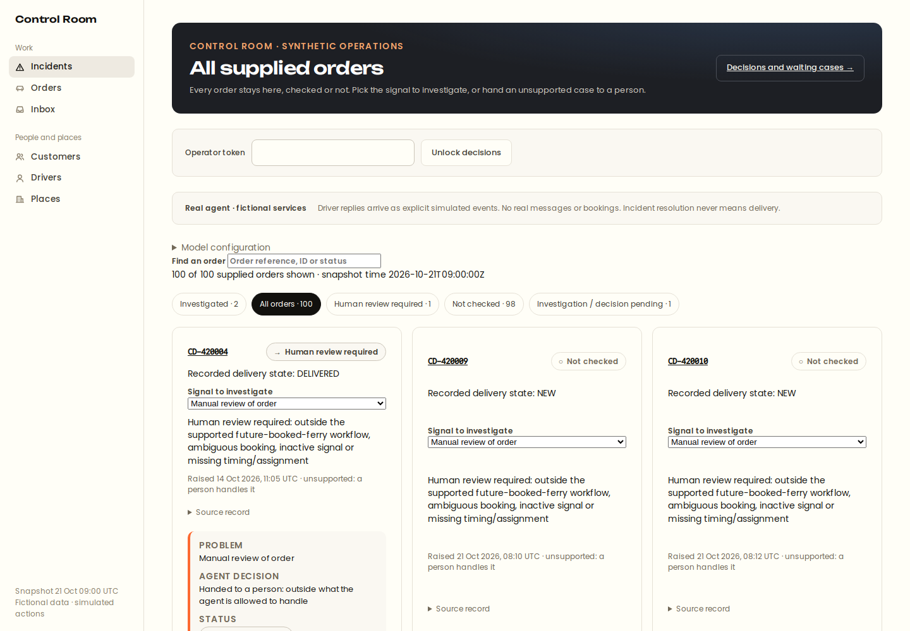
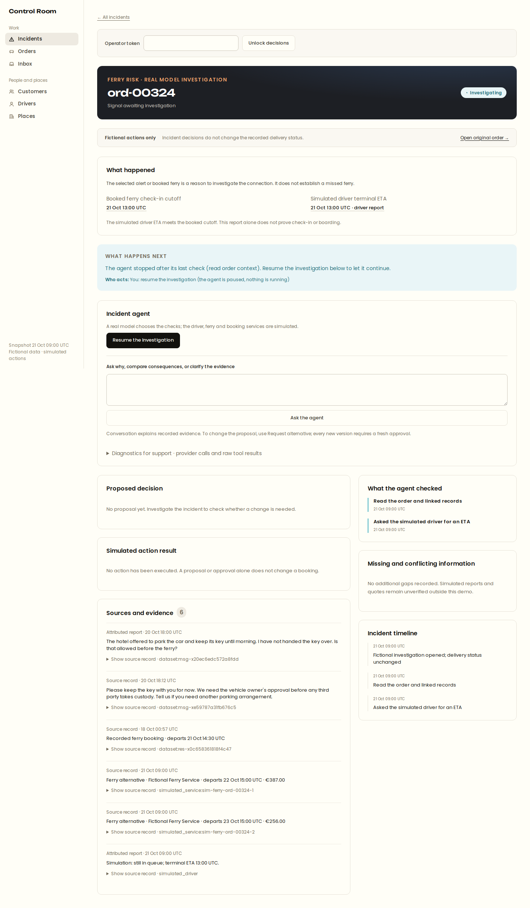
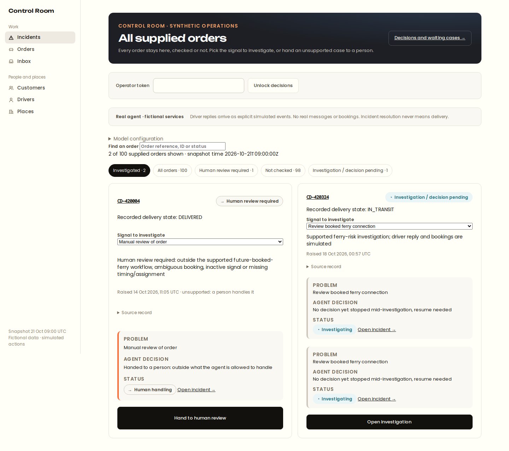

B
BAHN / CONTROL ROOM
PRODUCT DASHBOARD
THE DASHBOARD
Every delivery.
One control room.
A shared view of the delivery operation, with the context behind each order.
ACTUAL LOCAL DASHBOARD
BAHN / OPERATOR WORKSPACE

100 supplied orders · Fictional challenge dataset
01 / PRIORITISE
What needs
a person now?
The workspace separates decisions, waiting cases, paused investigations and human-only work.
ACTUAL LOCAL DASHBOARD
BAHN / OPERATOR WORKSPACE

A paused investigation is not an agent running in the background.
02 / KEEP COVERAGE VISIBLE
Unchecked is
not cleared.
All supplied orders remain visible. Filters distinguish investigated cases from orders not yet checked.
ACTUAL LOCAL DASHBOARD
BAHN / OPERATOR WORKSPACE

A quiet queue does not mean every order is safe.
03 / FOLLOW THE CASE
Read the facts.
Then investigate.
Open an existing incident to inspect its source, timeline and current state.
ACTUAL LOCAL DASHBOARD
BAHN / OPERATOR WORKSPACE

Existing saved incident · No new model call during this dashboard tour.
04 / HUMAN CONTROL
Know who
acts next.
Resume a paused investigation explicitly. Unsupported work is handed to an operator.
ACTUAL LOCAL DASHBOARD
BAHN / OPERATOR WORKSPACE
Proposed changes require exact-version approval, then a separate simulated apply.
THE OPERATOR WORKSPACE
Context first.
Judgement stays human.
Orders, investigations and decisions together — with the boundaries visible.
ACTUAL LOCAL DASHBOARD
BAHN / OPERATOR WORKSPACE

Real local application · Fictional data and simulated services · No real bookings